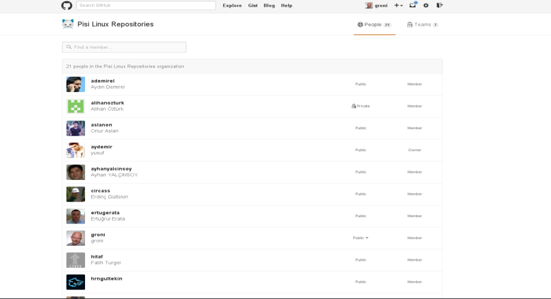
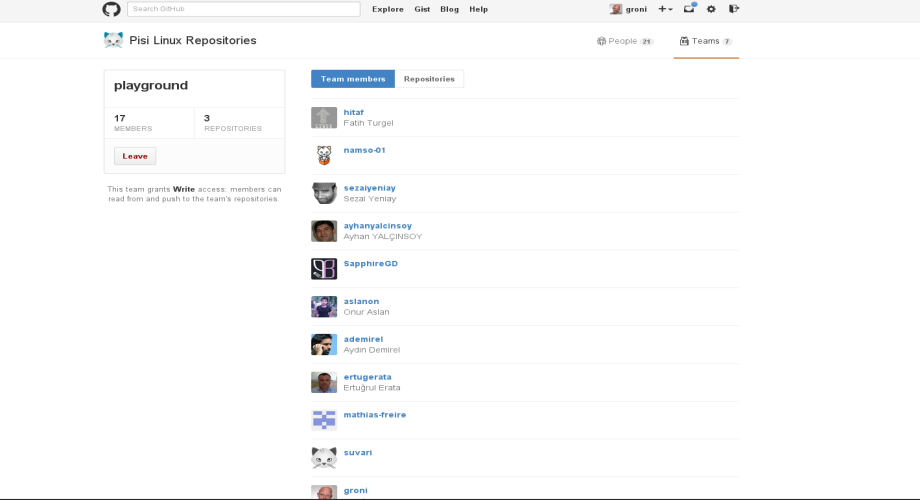

Pisi Linux Developer Base
Team
Home
Workstation
Guides
Projects
Releases
Team
Artwork


You can now Work with the Pisi Linux Team, step in now you are very welcome
Be a Member Now!
New Contributors
About New Contributors
Who is a contributor?
How do I start?
Responsibilities of a Contributor
Areas to Contribute
Development
Test
Bug reporting and triaging
Translation
Documentation
Graphical design and multimedia
How to be a Contributor?
Applicant Tracking on Bugzilla
Some Hints :)
Tracking Process
Stock Responses
Creating SVN Crypt Password
Creating a password with “htpasswd”
Creating A Password With Perl
Creating A Password With Python
Quick Guide to Pardus Translations
Subscribing to the Mailing List
Creating a Bugzilla Account
Introducing Yourself
Requesting Team Membership
Obtaining and Translating Projects
Committing Projects
Adding Non-Existing Translation File
Being Aware of Translation Updates
FAQ About Translations
1. Internationalization (i18n)
2. Localization (l10n)
3. Workflow between i18n and l10n
4. What happens when I translate and commit the LANGUAGE.po file to SVN?
5. Oh, I thought I already completed the translation of Kaptan but there are still English messages in it!
How do i test my translation?
Contributor Candidate Mentoring
Who are mentors?
What is the aim of this notion?
What are Mentoring Responsibilities?
What kind of works a developer interested in?
Package Maintainers
Component Supervisor
Software Developer
Lead Developer:
What kind of works a tester interested in?
Reporting and Triaging bugs
Joining Package Update Tests
Testing Shipping Release
Testing Pardus Nightly Releases
Creating Testcases
Developing Scripts and Tools
Technology used
Technology
Translations
Download
Bugs
Pisi Linux Global
Screenshots
Promotion Video